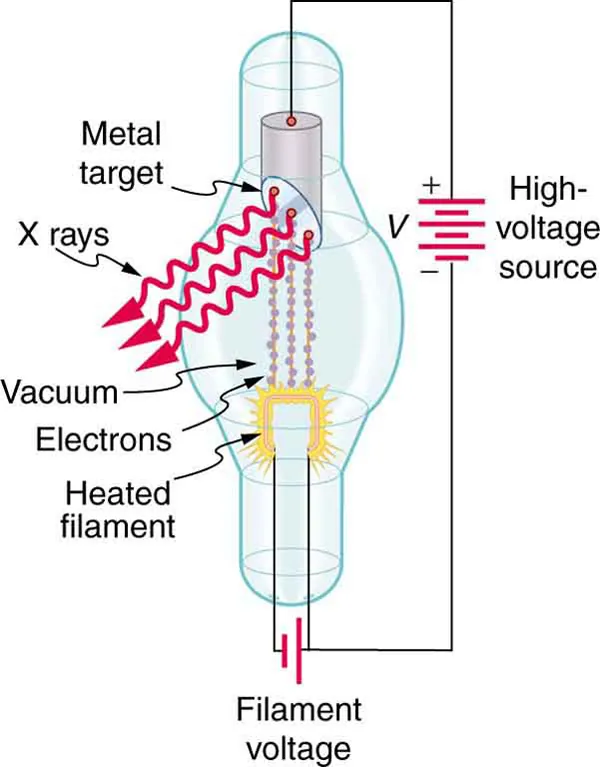

When you start learning X-ray imaging, two exposure factors appear almost everywhere: kVp and mAs.
They can seem confusing at first because changing either one can affect the radiation reaching the detector. But they do not control the same thing.
kVp mainly controls the energy of the X-ray beam, while mAs mainly controls the quantity of X-rays produced.
Let's understand why.
What Does kVp Mean?
kVp stands for kilovolt peak.
It is the peak voltage applied between the cathode and anode of the X-ray tube.
Inside the tube, electrons are released from the heated filament at the cathode and accelerated toward the anode. The tube voltage determines how much kinetic energy these electrons can gain before hitting the target.
When we increase the kVp, the electrons can reach the target with greater kinetic energy. This allows X-ray photons with higher energies to be produced.
For example, an exposure made at 80 kVp produces a more energetic and penetrating beam than one made at 60 kVp, assuming the other relevant factors are unchanged.
Remember that an X-ray beam contains photons with a range of energies, not photons that all have exactly the same energy.

How Does kVp Affect the Image?
Because a higher-kVp beam is more penetrating, a greater proportion of the beam can pass through the patient and reach the detector.
kVp also affects subject contrast.
Lower kVp → higher subject contrast
Higher kVp → lower subject contrast
So, increasing kVp generally gives a more penetrating beam and tends to reduce subject contrast.
There is one important detail: increasing kVp also generally increases X-ray tube output. So kVp is not a completely separate "energy-only" control.
For learning the basic difference, however, think of kVp primarily as the factor controlling beam energy and penetration.
What Does mAs Mean?
mAs stands for milliampere-seconds.
It is calculated as:
For example:
200 mA × 0.5 seconds = 100 mAs
mA represents the tube current and is related to the flow of electrons through the X-ray tube.
When we consider both tube current and exposure time, mAs represents the total tube current-time product. Under otherwise unchanged conditions, increasing mAs generally means more electrons strike the target and therefore more X-ray photons are produced.
Unlike kVp, increasing mAs does not make each photon more energetic. It mainly changes the number of photons produced.
Let's Use One Simple Example
Imagine we are taking the same chest X-ray.
Our original exposure is:
Now we will change only one factor at a time.
If We Increase kVp
Suppose we change:
80 kVp + 5 mAs
to:
90 kVp + 5 mAs
The mAs stays the same, but the tube voltage increases.
The electrons can gain more kinetic energy before hitting the target, so the resulting X-ray beam has higher-energy photons and greater penetrating ability.
Because kVp also generally increases X-ray output, the detector may receive more radiation as well.
If We Increase mAs
Now go back to:
80 kVp + 5 mAs
and change only the mAs:
80 kVp + 10 mAs
The kVp has not changed, so we have not increased the maximum energy of the electrons by changing the tube voltage.
Instead, we increased the total tube current-time product.
More electrons pass through the tube, so more X-ray photons are produced.
What Does More mAs Do to the Image?
When more X-ray photons reach the detector, there is more useful signal available.
If an exposure has too few detected photons, the image can contain more quantum noise, which may make it look grainy.
Increasing mAs generally increases the number of detected photons and therefore reduces relative quantum noise.
More mAs → more photons → less quantum noise
More mAs → greater radiation exposure
That is why the goal is not to use as much mAs as possible. The aim is to use an appropriate exposure for the examination.
kVp vs mAs — Side by Side
| Exposure factor | Mainly affects | Main effect |
|---|---|---|
| kVp | X-ray beam energy | Penetration and subject contrast |
| mAs | X-ray photon quantity | Detector exposure and quantum noise |
This is a useful way to learn the difference, but remember that the two factors are not completely independent.
kVp also generally affects X-ray output, while mAs mainly changes the number of photons.
kVp primarily affects energy and penetration.
mAs primarily affects photon quantity.
Why Is Exposure Time Part of mAs?
Because:
For example:
200 mA × 0.5 s = 100 mAs
and:
400 mA × 0.25 s = 100 mAs
Both have the same mAs.
Under otherwise equivalent conditions, they produce approximately the same total tube current-time product. However, the shorter exposure time can be useful when patient movement is a concern because it can reduce the time available for motion during the exposure.
So mAs tells us the total tube current-time product, while the choice of mA and exposure time can still have practical importance.
What About Digital X-ray Images?
In digital radiography, image processing can adjust the displayed brightness.
This means an image can look acceptable even when the exposure was higher than necessary.
So, a good-looking digital image does not automatically mean that the exposure was appropriate.
Technologists also consider factors such as exposure indicators, image noise, positioning, collimation, artifacts, and the clinical purpose of the examination.
The goal is to obtain the required image information while avoiding unnecessary radiation exposure.
A Simple Way to Remember It
Think about the X-ray beam as a stream of photons.
kVp asks:
“How energetic is the beam?”
mAs asks:
“How many photons are we producing?”
kVp → Energy
mAs → Quantity
For example:
80 kVp + 5 mAs
Think:
80 kVp → beam energy and penetration
5 mAs → amount of X-ray photons produced
Key Takeaway
kVp and mAs are both important exposure factors, but they mainly affect different aspects of X-ray production.
kVp is the peak tube voltage. Increasing it generally produces a more energetic and penetrating X-ray beam and tends to reduce subject contrast. It also generally increases X-ray tube output.
mAs is the product of tube current and exposure time. Increasing it generally produces more X-ray photons, which can reduce quantum noise, but it also increases radiation exposure.
So when you see an exposure such as:
80 kVp + 5 mAs
remember:
kVp mainly tells you about the energy of the beam.
mAs mainly tells you about the quantity of X-rays produced.
Once this basic difference is clear, understanding radiographic exposure factors becomes much easier.
Sources & Further Reading
-
Radiopaedia
— Peak kilovoltage (kVp)
Overview of kVp, X-ray beam energy, penetration and image contrast. -
Radiopaedia
— Milliampere-seconds (mAs)
Explanation of mAs, tube current, exposure time and X-ray photon quantity. -
OpenStax
— College Physics 2e: X-ray Production
Basic principles of X-ray tube operation and X-ray production. -
International Atomic Energy Agency (IAEA)
— Radiation Protection in Diagnostic and Interventional Radiology
Principles related to radiographic exposure, image quality and radiation protection.